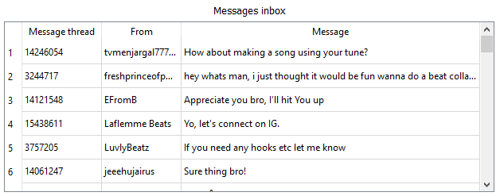

Introduction
Hello! I have developed upgraded version for my old bot. Functional is almost the same, with
some new features as:
Bot settings
Followers:
Here you can set the required filtering for the desired audience. For example, if you set min followers for 0, and max followers for 100, bot will operate with profiles, which followers number are between 0 and 100.Tracks:
Same as followers but for tracks.Plays:
Same as followers but for plays.Music Lover:
Additional filters. There you can set filters for profile types. If this toggled on, bot will operate with "Music Lover" profile type.Recording Artist:
Same as "Music Lover" but for "Recording Artist".Artist / Producer:
Same as "Music Lover" but for "Artist / Producer".Music Producer:
Same as "Music Lover" but for "Music Producer".Bearer Token:
This token defines your own profile. You can get it in seven simple steps:
1. Log in BeatStars via your browser, if you are
not logged in
2. Press F12 or CRTL+SHIFT+I keybinds. You are gonna see console, which looks like this
3. Go to "Network" tab
4. Now you need to make some actions on the website (like / message / follow / comment / etc). Then,
requests will appear on "Network" tab
5. Click on one request. Go to "Headers" tab.
6. Scroll till you can see "Request headers". Look for the "authorization" tag
7. Copy just token, without "Bearer" word and paste it to the bot.
User-Agent:
Same as bearer token, but you need to search "user-agent" tag instead of
"authorization". Copy it full to the bot.
Interval between sending messages/follow/unfollow:
This is interval between bot actions. For example, if you set timeout to 60 seconds, then bot gonna
follow
user,
wait 60 seconds, send him a message, wait another 60 seconds, then follow another user.
Interval between sending conecutive messages:
This is interval between consecutive messages sending. For example, if you set
timeout
to 30 seconds, then bot gonna send first message, wait 30 seconds, send second message, etc.
Message inbox refresh interval:
This is interval between inbox messages refreshing.
Unfollow:
Toggle off/on if bot gonna unfollow users which you follow. This is gonna set follow and message actions
to off.
Follow:
Toggle off/on if bot gonna follow users. This is gonna set unfollow action to off.
Send messages:
Toggle off/on if bot gonna send messages to users. This is gonna set unfollow action to off.
Messages inbox
Message inbox data:
There you can see your unread messages text and it's sender. Click on message to open reply menu
Reply menu:
There you can see sender username, message text. To reply to this message, you need to write reply text and
click send button. If you want to delete it from bot, then click on discard button. If reply was successfully
sent, then bot will not show it anymore.
Statistics
Explored accounts:
How much users bot was searched through
Messages sent:
How much messages were sent, replies are not included here
Replies sent:
How much replies were sent
Users followed:
How much users were followed
Users unfollowed:
How much users were unfollowed
Users skipped:
How much users were skipped due to your filters or errors
Actions log
There you can see bot actions log. Red records are errors.
Message templates
There you can add message templates. To create a new one click on "Add new message". In the opened text
window
write message text, and save it. Later you can edit this template or delete it.
Bugs / crashes
If some sort of error has occured, contract me and send "info.log" file from bot
folder.